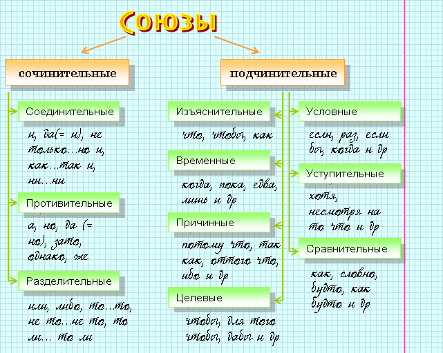
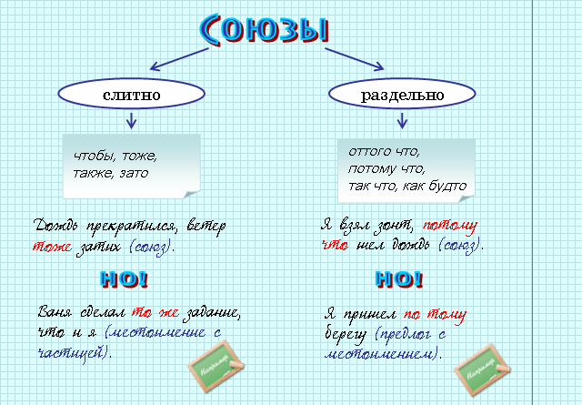

|
Служебные части речи не называют предметов, действия и т. п., не отвечают на вопросы и не являются членами предложения. |
 |
выражать синтаксические отношения между самостоятельными словами |  |
стрелять в цель, гулять в лесу |
|
выражать синтаксические отношения между сочетаниями слов, предложениями | |
солнце скрылось, и быстро стемнело; было уже поздно, когда мы подошли к дому |
|
присоединять к реальному значению самостоятельных слов различные дополнительные смысловые оттенки | |
вы-то это знаете, лишь вы это знаете |
|
Предлог – это служебная часть речи, которая выражает зависимость существительных, числительных и местоимений от других слов в словосочетаниях и предложениях. |
 |
Предлоги не являются членами предложения, но входят в состав членов предложения. |
|
Мы зашли в комнату (предлог в входит в состав обстоятельства в комнату). |
|
Пространственные (указывают на место): в, на, из-за, под, около, вокруг, у, к, над и др. |
|
ходить вокруг дома, прийти в школу, найти под стулом |
|
Временные (указывают на время): через, к, до, с, перед, в течение и др. |
|
работать с 8 часов, закончить к вечеру |
|
Причинные (указывают на причину): по, от, вследствие, из-за, за, ввиду и др. |
|
не пришел по уважительной причине, промок из-за дождя |
|
Целевые (указывают на цель): для, ради, на. |
|
работать на будущее, остановились для ночлега |
|
Образа действия (указывают на образ действия): с, без, в, по и др. |
|
работать с огоньком, говорил без увлечения |
|
Дополнительные (указывают на предмет, на который направлено действие):
о, об, с, про, по, насчет и др. |
|
рассказать о происшествии, встретиться с другом |
|
идти в лес (предлог в
имеет пространственное значение), прийти в 2 часа (предлог в имеет временное значение). |
| слитно | раздельно | через дефис |
|
ввиду
вследствие наподобие вроде насчет вместо внутри вслед навстречу сверху несмотря на |
в деле
в области в отношении в течение в продолжение в отличие в связи в силу по мере по поводу по причине за исключением за счет в целях |
из-за
из-под по-над по-за |
|
Союз – это служебная часть речи, которая служит для связи членов предложения или простых предложений в составе сложного. |


|
Частица – это служебная часть речи, которая придает словам дополнительные смысловые и эмоциональные оттенки и служит для образования новых форм слов. |
|
Пусть сильнее грянет буря! (частица пусть образует повелительное наклонение глагола и входит в состав сказуемого). |
| формообразующие; | |
| модальные (частицы, выражающие различные смысловые и эмоциональные оттенки). |
|
наклонений
глагола:
повелительного (да, пусть, пускай, давай). условного (бы) |
|
Давайте жить дружно. Эх, пошел бы дождь. |
|
форм степеней сравнения прилагательного (более, менее, самый) | |
Ты у меня самый смелый. |
|
неопределенных местоимений (-то, -либо, -нибудь, кое-). | |
Кто-нибудь знает, что случилось? |
|
Вопросительные частицы (ли, разве, неужели, а, что). | |
Неужели в самом деле все сгорели карусели? |
|
Восклицательные частицы (что за, как, ну и). | |
Что за чудные цветы! |
|
Указательные частицы (вот, вот и, вон). | |
Вот и наш дом. |
|
Усилительные частицы (даже, ведь, да и, же). | |
У тебя такие руки, что сбежали даже брюки… |
|
Отрицательные частицы (не, ни) |
|
Междометие – это неизменяемая часть речи, которая выражает (но не называет) различные чувства. Междометия не являются ни самостоятельными, ни служебными частями речи. |
| эмоциональные (ах, эх, ой и т.д.); | |
| побудительные (Например: Чш! Боже вас сохрани шуметь!) |
|
К междометиям
близки звукоподражательные слова. Например: мяу, кукареку, тик-так. |